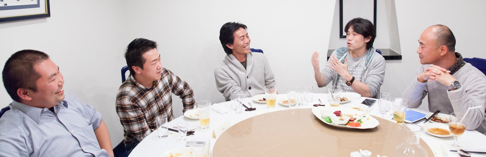
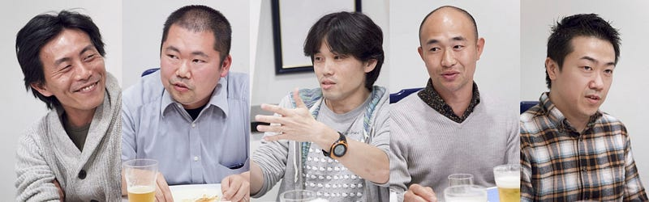
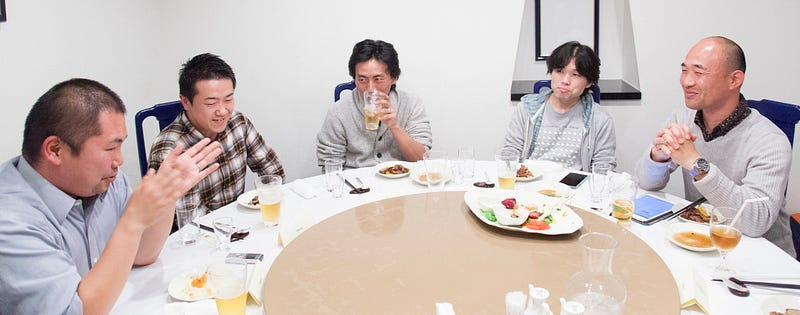
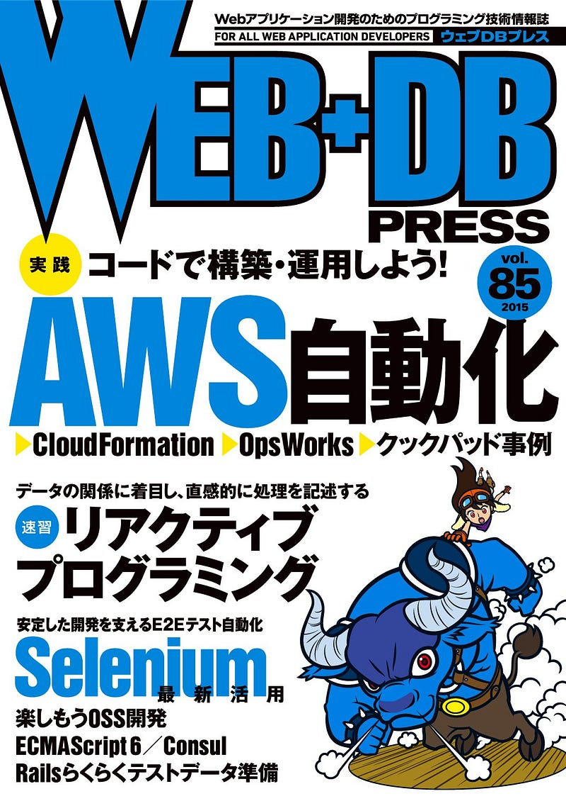

Conference Organizers Summit (Sort Of)

Conference Organizers Summit (Sort Of)
Back in November 2014, I gathered the masterminds behind running RubyKaigi (@kakutani), PyCon JP (@suzuki) , JANOG (@taji_314159265), as well as YAPC::Asia Tokyo emeritus @941-san.
I reserved a room at a Chinese restaurant, and at the round table we talked for over 3 hours about problems that we face as organizers, the joy we find, and plans for the future.

This project actually started as my antithesis for an event called Conference Conference: In that event we talked in front of an audience, which meant that there were somethings we just… couldn’t… say.
That was very frustrating for me. I wanted to talk about the deep stuff. The money, the problems, the dark side. I wanted to know how things were really done in other conferences.
In the end the talk was just so much fun. We exchanged our visions and our stories both good and bad. It was extremely interesting to see our common grounds and differences.

I knew I wanted to share this to the rest of the world, so I talked to the editor for Web+DB Press, and voila, edited excerpts from this roundtable talk is going to be available on Web+DB Press vol.85, out on Feb 24.

I know that if you’re reading this, then you probably don’t read Japanese, but if you do, and you are interested in behind-the-scenes talk about running tech conferences, this will be an extremely interesting article.
We are contemplating to come up with a full-version epub book for this talk later, too. Stay tuned if you’re interested!